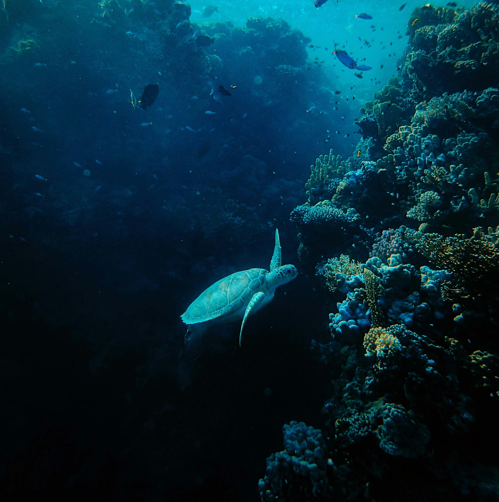
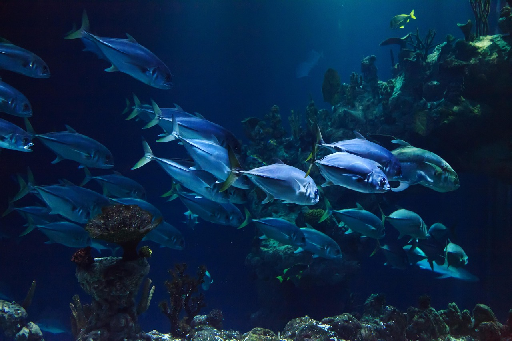
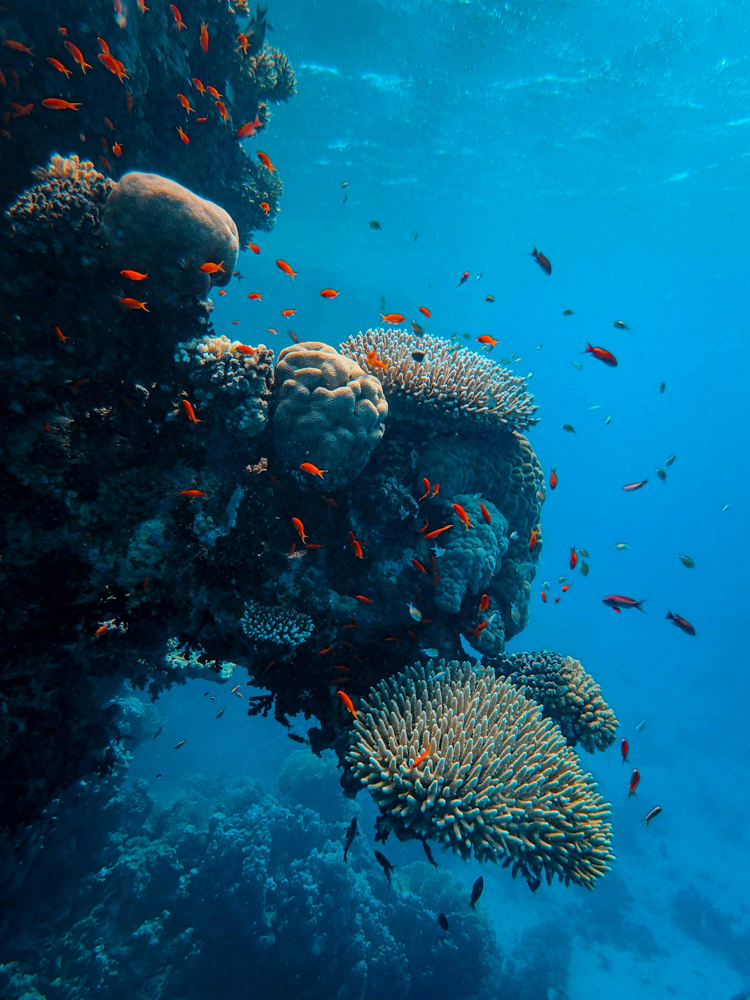

Vamos proteger os nossos oceanos!
Os oceanos são fundamentais para a vida no nosso planeta. No entanto, a poluição e os resíduos de plástico ameaçam muitas espécies marinhas.
Neste projeto, vais encontrar informações sobre a vida marinha e aprender como podes ajudar a proteger os oceanos.



- A vida marinha engloba o maior e mais vital ecossistema do planeta Terra, sendo responsável por abrigar entre 50% a 70% de todas as formas de vida do mundo.
- Os oceanos, que cobrem cerca de 71% da superfície terrestre, servem de lar para uma biodiversidade gigante que vai desde o plâncton microscópico até a gigantesca baleia-azul.